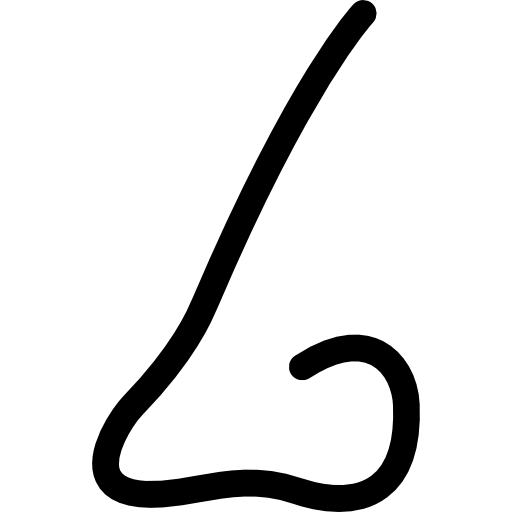

Scratch and Sniff Proust
by Virginia Barry, M.D. with artwork by Heather Hancock


- About
the author - About
the artist - Neuroscience
of Smell - First
chapter
Events

The prose of Marcel Proust, 20th-century French modernist, transports his reader down Swann's Way through his words' mastery of sensation. Early and often, his poignent descriptions of scent engage an instant transportation into the minds of his characters. Dr. Virginia Barry, psychiatrist and psychoanolist, investigates the neurobiological architecture behind Proust's techniques. In a fanciful twist on In Remembrance of Time Past, Dr. Barry provides a set of scratch and sniff scents and scientific discussions to illustrate the direct neural connection between scent and memory. Together with the stunning mural work of Chicago artist Heather Hancock, Dr. Barry opens up a fresh and exciting new way to interpret Proust's masterpiece.